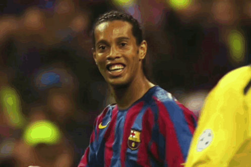

информация о известных фyтболистов
1 Леонель Месси
Лионель Месси — аргентинский футболист, нападающий и капитан сборной Аргентины,
чемпион мира,
восьмикратный
обладатель «Золотого мяча», выступал за «Барселону»
и «Пари Сен-Жермен», в 2023 году перешел в «Интер
Майами»
2 Криштиану Роналду
Быть великим — его работа: Трофеи Криштиану Роналду, количество которых перевалило за полторы сотни, хорошо известны фанатам. Он один из самых результативных игроков в истории. Футболист вспоминал, что после получения первых трофеев его переполняли невероятные эмоции. В молодости он поставил себе за цель завоевывать награды для «Реал Мадрида» и стать легендой клуба. По словам спортсмена, со временем в клубе начали считать неудачей, не проигрыш, а случай, когда он ничего не выигрывал. Криштиану заявлял, что его работой стало быть великим.
Он швырнул стул в учителя: В интервью спортсмен рассказывал, что его обучение в школе не интересовало. В 14 лет Криштиану исключили из школы за то, что он бросил в педагога стул. По словам Роналду, учитель насмехался над его акцентом и заявил, что футбол никогда не сделает его великим. По мнению исследователей биографии спортсмена, этот инцидент стал поворотным в судьбе футболиста. Родители Криштиану решили не искать новую школу, рассудив, что он должен сосредоточиться исключительно на футболе. 3 Килиан Мбаппе
Действительно, в 13 лет игроком заинтересовался Зинедин Зидан, на тот момент работавший с молодёжью "королевского клуба". После откровенного разговора с семьёй было принято коллективное решение отказаться от супер-трансфера (если его можно назвать таковым). А уже через два года был подписан первый в жизни юноши контракт - с "Монако" из одноимённой страны, но с правом участвовать в ежегодном розыгрыше чемпионата Франции. Где-то мы уже это слышали...
В шесть лет (2004 год) Килиан Мбаппе начал заниматься футболом в «Бонди», где тренировал его отец. Параллельно мальчик учился в местной частной католической школе. По словам учителей, он считался одаренным ребенком, но очень беспокойным. В «Бонди» Килиан тренировался под руководством своего отца и Антонио Риккарди. По словам специалистов, Мбаппе с детства отличался техничным дриблингом и высокой скоростью.
4 Эмилиано Мартинес

Эмилиано Мартинес — аргентинский футболист, вратарь клуба «Астон Вилла» и сборной Аргентины. Факты о нём включают
информацию о биографии, клубной карьере и выступлениях за сборную. Родился 2 сентября 1992 года в Мар-дель-Плата
(Буэнос-Айрес). Рост — 195 см, вес — 88 кг. С 2010 года выступал в «Арсенале», но не в стартовом составе. Дебют в
основном составе состоялся 22 октября 2014 года в матче Лиги чемпионов с «Андерлехтом».
С 2010 года выступал в «Арсенале», но не в стартовом составе. Дебют в основном составе состоялся 22 октября 2014
года в матче Лиги чемпионов с «Андерлехтом».
Дебютировал в сборной 3 июня 2021 года в отборочном матче чемпионата мира 2022 года против сборной Чили. С 2021 года стал основным вратарём сборной Аргентины. На чемпионате мира 2022 года в четвертьфинале против сборной Нидерландов отбил два из пяти пенальти в послематчевой серии и помог команде выйти в полуфинал. В финале против сборной Франции защитил ворота от опасного удара Рандаля Коло Муани в пределах штрафной площади на добавленном ко второму экстратайму времени, а также отбил послематчевый пенальти Кингсли Комана. 15 июня 2024 года Мартинес был включён в состав сборной Аргентины на Кубок Америки 2024. В четвертьфинальном матче против Эквадора отразил два пенальти после ничьей 1:1, обеспечив своей стране выход в полуфинал.
5 Эрлинг Холанд
Эрлинг Холанд — норвежский футболист, нападающий английского клуба «Манчестер Сити» и сборной Норвегии. Родился 21 июля 2000 года.
Холанд начинал карьеру в норвежских клубах «Брюне» и «Молде», а в январе 2019 года перешёл в австрийский клуб «Ред Булл Зальцбург». Следующие 2 года провёл в дортмундской «Боруссии», после чего перешёл в «Манчестер Сити». Рекордсмен английской Премьер-лиги по голам за сезон (36 голов в сезоне 2022/23). Лучший бомбардир в истории сборной Норвегии.
10 августа 2024 года помог «Сити» выиграть Суперкубок Англии. 17 января 2025 года Холанн продлил контракт с клубом до 2034 года.
6 Лев Яшин
Лев Ива́нович Я́шин (22 октября 1929, Москва — 20 марта 1990, там же) — советский футболист, вратарь. Олимпийский чемпион 1956 года и чемпион Европы 1960 года, пятикратный чемпион СССР, трёхкратный обладатель Кубка СССР. Заслуженный мастер спорта СССР (1957), Герой Социалистического Труда (1990), кавалер двух7 Роберто Карлос
Роберто Карлос (полное имя — Роберто Карлос да Силва Роша) — бразильский футболист, левый защитник. Способен был также сыграть на позиции как центрального защитника, так и опорного полузащитника.
Биография Родился 10 апреля 1973 года в Гарсе (штат Сан-Паулу). Назван в честь известного бразильского певца Роберту Карлуса. Карьера Некоторые этапы футбольной карьеры Роберто Карлоса: Выступал за клубы: «Униан Сан-Жуан» (1988–1992), «Палмейрас» (1993–1995), «Интер» (1995–1996), «Реал» (1996–2007), «Фенербахче» (2007–2009), «Коринтианс» (2009–2011). В 18 лет впервые приглашён в сборную Бразилии. Участник трёх чемпионатов мира (1998, 2002, 2006). Всего в сборной (1992–2006) провёл 125 матчей и забил 11 голов, в том числе в официальных матчах — 69 матчей, 3 гола. В 2012 году начал тренерскую карьеру в команде «Анжи». В 2013–2014 годах возглавлял «Сивасспор». В 2015 году тренировал «Акхисар Беледиеспор». Завершил тренерскую карьеру в клубе «Дели Дайнамос».8 Тиагу Силва
Тиагу Эмилиано да Силва (порт.-браз. Thiago Emiliano da Silva) — бразильский футболист, центральный защитник и капитан клуба «Флуминенсе». Известен мастерством в обороне, дисциплиной и лидерством.
Родился 22 сентября 1984 года в Рио-де-Жанейро. Рост — 181 см, вес — 79 кг. Клубная карьера Начал карьеру в 2002 году, играя полузащитником в команде РГ Футбол, но в «Жувентуде» перешёл на позицию защитника. В 2004 году подписал контракт с «Порту» и перешёл в московское «Динамо» на правах аренды. После восстановления присоединился к «Флуминенсе» и выиграл Кубок Бразилии. В 2009 году перешёл в «Милан» за 8 миллионов евро и выиграл титул чемпиона Серии А.9 Златан Иброгимович
Златан Ибрагимович — шведский футболист, игравший на позиции нападающего. Бывший капитан и лучший бомбардир в истории сборной Швеции.Родился 3 октября 1981 года в Мальмё (Швеция). Рост — 195 см.
С 12-летнего возраста выступал за юношеские команды «Мальмё», в 1999 году дебютировал в основном составе. Летом 2001 года перешёл в нидерландский «Аякс». За три года в Амстердаме выиграл два чемпионских титула и один Кубок страны. Летом 2004 года перешёл в итальянский «Ювентус». В первом сезоне за «бьянконери» стал чемпионом Италии. Летом 2016 года на правах свободного агента перешёл в английский «Манчестер Юнайтед». В составе «красных дьяволов» стал победителем Лиги Европы, обладателем Кубка Футбольной лиги и Суперкубка Англии.
10 Серхио Рамос
Серхио Рамос Гарсия — испанский футболист, защитник и капитан мексиканского клуба «Монтеррей». Бывший игрок сборной Испании.Родился 30 марта 1986 года в Камасе (провинция Севилья). С 6 лет начал заниматься футболом в местной команде «Камас».
Летом 2005 года перешёл в мадридский «Реал Мадрид». В течение 16 сезонов играл на позиции центрального защитника, капитаном клуба был в течение шести сезонов. Ранее в карьере играл на позиции правого защитника. В 2021 году перешёл в «Пари Сен-Жермен» свободным агентом. В феврале 2025 года перешёл в мексиканский «Монтеррей». В команде взял 93-й номер. Международная карьера Представлял сборную Испании на четырёх чемпионатах мира и трёх чемпионатах Европы.
11 Роберт Левандовский
Роберт Левандовски (Robert Lewandowski) — польский футболист, нападающий испанского клуба «Барселона» и капитан национальной сборной Польши.Родился 21 августа 1988 года в Варшаве. Рост — 185 см, вес — 81 кг.

Начал профессиональную карьеру в 2005 году в клубе «Дельта» из четвёртого дивизиона Польши. В 2008–2010 годах выступал за клуб высшей лиги «Лех» (Познань), в составе которого стал победителем Кубка и Суперкубка Польши, а также чемпионом страны. В 2010–2014 годах представлял дортмундскую «Боруссию», дважды становился победителем Бундеслиги. В 2014 году перешёл в мюнхенскую «Баварию», в составе которой семь раз выиграл чемпионат Германии, пять раз — Суперкубок Германии, три раза — Кубок страны. В 2020 году привёл «Баварию» к победе в Лиге чемпионов УЕФА, став лучшим бомбардиром турнира. В 2022 году перешёл в «Барселону».
12 Роналдиньо


Роналдиньо (настоящее имя — Роналду ди Асис Морейра) — бразильский футболист, выступавший на позиции атакующего полузащитника и нападающего. Славился способностями к дриблингу, точностью штрафных ударов, использованием трюков, финтов, передач без обводки и ударов, а также умением забивать мячи и создавать голевые моменты.Родился 21 марта 1980 года в Порту-Алегри (Бразилия). Был третьим ребёнком в семье. С 7 лет занимался в футбольной школе, получил прозвище Роналдиньо (уменьшительное имя, в честь Роналдо).
Некоторые этапы футбольной карьеры Роналдиньо: 1998–2001 — игрок основного состава «Гремио» (Бразилия). 2001–2003 — представлял французский клуб «Пари Сен-Жермен» (Париж). В его составе стал обладателем Кубка Интертото (2001). 2003–2008 — выступал за испанскую «Барселону». Вместе с ней стал двукратным чемпионом страны (2005, 2006) и обладателем Кубка Испании (2005, 2006), а также победителем Лиги чемпионов УЕФА (2006). 2008–2010 — играл за итальянский «Милан». В его составе выиграл национальное первенство сезона 2010/2011 (считается чемпионом, несмотря на то, что покинул команду в январе 2011 года). 2011–2012 — представлял бразильский клуб «Фламенго» (Рио-де-Жанейро). Вместе с ним стал чемпионом Лиги Кариока (чемпионат штата Рио-де-Жанейро). 2012–2014 — был игроком бразильского «Атлетико Минейро» (Белу-Оризонти). В 2013 году в его составе выиграл Лигу Минейро (чемпионат штата Минас-Жерайс) и Кубок Либертадорес.
13 Инютин Матфей
Матвей Инютин родился 2020 году в сентябре. он очень любит 3 вещи ：Маму, конфеты и футбол.